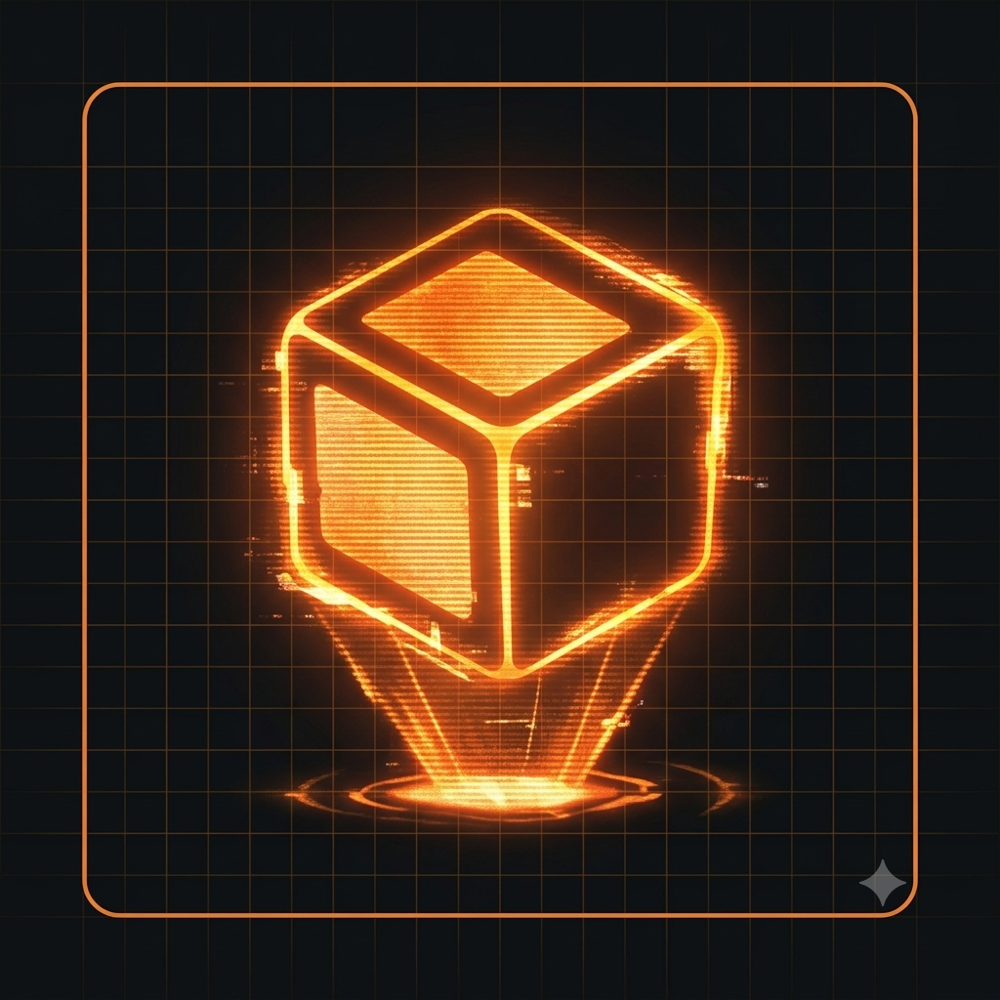

E:D Black BoxЗдесь вместо грузовых стеллажей нужны каюты, а вместо разницы цен доход определяют тарифы заданий. Учитывай класс каюты, требования пассажиров и сроки. Можно возить туристов на короткие рейсы, летать по экскурсионному маршруту Robigo или отправляться за тысячи световых лет с пассажирами класса люкс. Это занятие на стыке торговли и исследований. Награды — кредиты и репутация фракций, но не заслуги Powerplay.
Вместо грузовых стеллажей ставь пассажирские каюты , а вместо груза вези людей. Доход зависит не от разницы цен на рынке, а от пассажирских заданий , которые берут в пассажирском зале станции. В каждом указаны пункт назначения, оплата, срок и иногда особые требования пассажира. Как и в торговле, нужно продумывать логистику, но вместо товаров у тебя люди, а у них свои требования.
Весь цикл строится на заданиях, а не на рынке:
Заполни каюты в пассажирском зале.
Спланируй рейс с несколькими остановками.
Посети маяки или долети до станции.
Высади пассажиров и забери награду.
Обычно перевозки безопасны, но есть два исключения: требования VIP (короткий срок, определённый класс каюты или запрет сканирования) и разыскиваемые пассажиры , из-за которых тебя могут перехватить и просканировать. Главный способ заработка — заполнять каюты туристами на общем экскурсионном маршруте. Такой рейс приносит в час больше, чем перевозка товаров на том же корпусе.
Пассажирские каюты бывают четырёх классов. В задании указан минимальный:
Невысокая оплата, много мест: группы и беженцы.
Оплата выше, мест меньше.
Туристы с большим бюджетом и многие VIP.
Самые дорогие заказы от VIP и туристов.
Пассажир сядет только в каюту своего класса или выше. Набор разных кают позволяет брать больше типов заказов на одном корабле. Каюты высокого класса крупнее и дают меньше мест на отсек. Выбирай между оплатой за пассажира и количеством мест.
Туристические цели часто далеко друг от друга, поэтому дальность прыжка почти так же важна, как число кают. Лайнер должен успеть посетить дальние маяки в срок. У пассажиров есть предел терпения и требования к комфорту: задержка или повреждения могут заставить их сойти раньше, и ты не получишь оплату. В рейсах с разыскиваемыми и некоторыми VIP следи за нагревом, избегай служб безопасности и уходи от перехватов прыжком в другую систему.
Специализированный лайнер вроде Lynx Highliner рассчитан на экскурсионный маршрут Robigo–Sirius. Отсеки ограничены: не выше пятого класса для FSD, не ниже шестого класса для системы жизнеобеспечения, а в пассажирские отсеки (два шестого класса и один пятого) ставятся только каюты. Выбирай каюты самого высокого подходящего класса, не жертвуя дальностью до маяков.
| Занятие | Награда | Сложность | В чём суть |
|---|---|---|---|
| Экскурсионный маршрут Robigo | Кредиты за задания (много) | Средняя | Известный маршрут: набери в Robigo Mines экскурсии к маякам в районе Sirius, пройди круг, вернись и получи оплату. Один из самых доходных маршрутов в начале и середине игры. |
| Рейсы к туристическим маякам | Кредиты за задания | Начальная | Обычные экскурсии к достопримечательностям из любой станции с оживлённым пассажирским залом. |
| Массовые перевозки | Кредиты за задания | Начальная | Перевози группы экономкласса, например беженцев, между системами. Пассажиров много, оплата за каждого скромная. |
| Заказы VIP | Кредиты за задания (много) | Средняя | Дорогие заказы от отдельных пассажиров с условиями по каюте, сроку или сканированию. Доходные, если выполнить условия. |
| Рейсы с разыскиваемыми | Кредиты за задания (много) | Средняя | Вези разыскиваемых пассажиров, обходя охрану и проверки. За риск платят больше, но сканирование или провал могут стоить оплаты и штрафа. |
| Дальние туристические рейсы | Кредиты за задания (очень много) | Высокая | Вози туристов к далёким достопримечательностям, иногда за тысячи световых лет. Сочетание перевозок и исследований приносит высокую оплату. |
| Общественные цели | Награды за общественные цели | Средняя | Общественные цели по эвакуации и перевозкам дают кредиты и модули по размеру вклада. |
Маршрут Robigo — один из главных способов заработка, но он зависит от баланса игры и набора маяков. Оплата и лучший набор заказов меняются. Сверяй, какие задания брать и куда лететь, с актуальными маршрутами сообщества.
Небольшой специализированный корабль вроде Dolphin стоит недорого, мало греется и далеко прыгает. Подходит для первых экскурсий. Подобрать корабль поможет сравнение пассажирских кораблей .
Эконом, бизнес и первый класс позволяют брать самые разные заказы в одном зале.
В оживлённом пассажирском зале возьми несколько заданий с общими маяками. Один рейс закроет сразу несколько заказов.
Расположи маяки по удобному маршруту. Проверь, хватит ли дальности и времени на каждый участок.
Избегай повреждений и долгих крюков: недовольные пассажиры сойдут. С разыскиваемыми пассажирами держи корабль холодным и избегай сканирования.
Сдай все выполненные заказы сразу. Хорошо подобранная экскурсия даёт больше, чем перевозка груза на том же корабле.
В середине игры важны число кают, дальность и прибыльные маршруты.
Возьми специализированный лайнер, например Lynx Highliner , и заполни пассажирские отсеки каютами самого высокого подходящего класса. Настрой двигатель FSD под длину участков маршрута. Больше дорогих кают за рейс — больше доход.
Выполняй пассажирские задания вместе, чтобы поднимать репутацию у фракции. Со временем откроются более выгодные заказы и появится доступ к рангам и заданиям, полезным в других ролях.
Пассажирские задания не дают заслуг Powerplay ни за одну державу. Если нужны деньги за перевозки и прогресс за державу в одной сессии, пассажирских заданий недостаточно. За заслугами иди в бой или вози товары.
Полные оценки, число кают и цены есть в сравнительном досье. Ниже — варианты для разных этапов.
Специалист по Robigo–Sirius. Лайнер для экскурсий: пассажирские отсеки заполнены каютами высоких классов, а оснащение подобрано под маршрут Robigo.
Максимум дорогих кают. Туристический флагман: больше всего кают первого класса и люкс для самых дорогих экскурсий и VIP.
Быстрый стильный лайнер. Быстрый и красивый корабль для торопливых VIP и дальних экскурсий, не требующий большой площадки.
Дёшев, мало греется, далеко прыгает. Хороший первый пассажирский корабль: стоит недорого, мало греется и долетает до туристических маяков без дорогого оснащения.
Оценки всех подходящих кораблей по общей шкале, вместимость кают и цены см. в разделе сравнение пассажирских кораблей .
| Награда | За что дают | Примечания и примерный масштаб |
|---|---|---|
| Кредиты | Оплата за задания | Главный заработок: полный набор экскурсий Robigo даёт один из лучших доходов в час в начале и середине игры. Дальние рейсы класса люкс приносят больше за заказ. |
| Репутация фракции | Выполненные пассажирские задания | Репутация открывает более выгодные задания и помогает получить доступ к флотским рангам и возможностям других ролей. |
| Данные исследований (попутно) | Обзор систем по пути | Дальние экскурсии проходят через непросканированные системы. Привычка включать сканер обнаружения приносит немного картографических данных. |
| Награды за общественные цели | Общественные цели по перевозкам и эвакуации | Кредиты и модули по размеру вклада в перевозку или эвакуацию. |
| Заслуги Powerplay | — нет — | Пассажирские задания не дают заслуг Powerplay ни за одну державу. Для прогресса державы планируй другие занятия. |
Дальний туризм — это исследования с платящим гостем. Маяки и достопримечательности интересны обеим ролям, а сканер обнаружения по пути добавляет картографические данные к оплате.
В перевозках, как и в торговле, нужно продумывать маршрут, сроки и дальность. Но вместо разницы цен ты получаешь фиксированную оплату, а вместо выбора товаров подбираешь классы кают.
Пассажирские задания дают только кредиты и репутацию, без заслуг. Если важен прогресс державы, выдели время на бой или грузовые перевозки.
Маршрут Robigo позволяет быстро накопить на другие корабли в начале игры. Репутация у фракций помогает получать ранги и доступ к заданиям для других ролей.
Пассажирские перевозки быстро приносят деньги. Рейсы Robigo с полными каютами выгодны в начале и середине игры, дальние экскурсии сочетаются с исследованиями и дают самую высокую оплату за заказ. Репутация пригодится для общего прогресса. Заслуг Powerplay здесь не заработать.
Цифры в статье сверены авторами оригинала с источниками ниже.